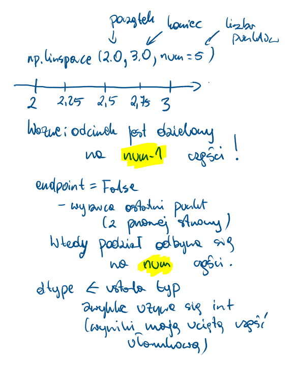
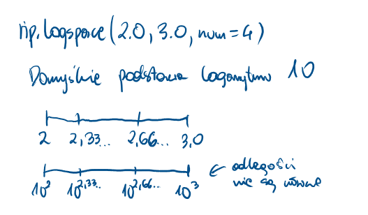
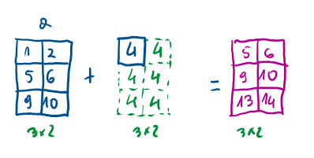
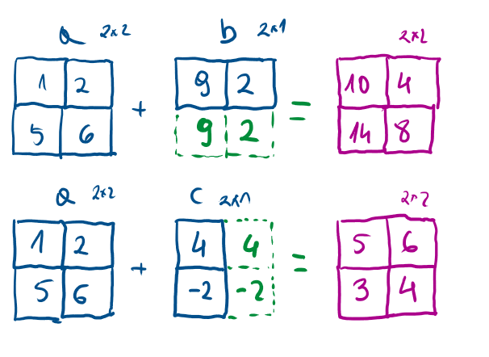
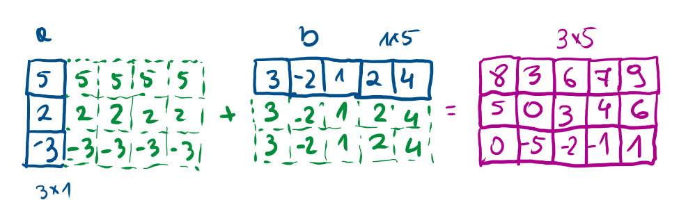

NumPy jest biblioteką Pythona służącą do obliczeń naukowych.
Zastosowania:
- algebra liniowa
- zaawansowane obliczenia matematyczne (numeryczne)
- całkowania
- rozwiązywanie równań
- …
Import biblioteki NumPy
Podstawowym bytem w bibliotece NumPy jest N-wymiarowa tablica zwana ndarray. Każdy element na tablicy traktowany jest jako typ dtype.
numpy.array(object, dtype=None, *, copy=True, order='K', subok=False, ndmin=0, like=None)
- object - to co ma być wrzucone do tablicy
- dtype - typ
- copy - czy obiekty mają być skopiowane, domyślne
True
- order - sposób układania: C (rzędy), F (kolumny), A, K
- subok - realizowane przez podklasy (jeśli
True), domyślnie False
- ndmin - minimalny rozmiar (wymiar) tablicy
- like - tworzenie na podstawie tablic referencyjnej
import numpy as np
1a = np.array([1, 2, 3])
print("a:", a)
2print("typ a:", type(a))
3b = np.array([1, 2, 3.0])
print("b:", b)
4c = np.array([[1, 2], [3, 4]])
print("c:", c)
5d = np.array([1, 2, 3], ndmin=2)
print("d:", d)
6e = np.array([1, 2, 3], dtype=complex)
print("e:", e)
7f = np.array(np.mat('1 2; 3 4'))
print("f:", f)
8g = np.array(np.mat('1 2; 3 4'), subok=True)
print("g:", g)
print(type(g))
- 1
-
Standardowe domyślne.
- 2
-
Sprawdzenie typu.
- 3
-
Jeden z elementów jest innege typu. Tu następuje zatem rozszerzenie do typu “największego”.
- 4
-
Tu otrzymamy tablicę 2x2.
- 5
-
W tej linijce otrzymana będzie tablica 2x1.
- 6
-
Ustalenie innego typu - większego.
- 7
-
Skorzystanie z podtypu macierzowego.
- 8
-
Zachowanie typu macierzowego.
a: [1 2 3]
typ a: <class 'numpy.ndarray'>
b: [1. 2. 3.]
c: [[1 2]
[3 4]]
d: [[1 2 3]]
e: [1.+0.j 2.+0.j 3.+0.j]
f: [[1 2]
[3 4]]
g: [[1 2]
[3 4]]
<class 'numpy.matrix'>
Lista a tablica
import numpy as np
import time
start_time = time.time()
my_arr = np.arange(1000000)
my_list = list(range(1000000))
start_time = time.time()
my_arr2 = my_arr * 2
print("--- %s seconds ---" % (time.time() - start_time))
start_time = time.time()
my_list2 = [x * 2 for x in my_list]
print("--- %s seconds ---" % (time.time() - start_time))
--- 0.0 seconds ---
--- 0.06189250946044922 seconds ---
Atrybuty tablic ndarray
shape |
krotka z informacją liczbę elementów dla każdego z wymiarów |
size |
liczba elementów w tablicy (łączna) |
ndim |
liczba wymiarów tablicy |
nbytes |
liczba bajtów jaką tablica zajmuje w pamięci |
dtype |
typ danych |
https://numpy.org/doc/stable/reference/arrays.ndarray.html#array-attributes
import numpy as np
tab1 = np.array([2, -3, 4, -8, 1])
print("typ:", type(tab1))
print("shape:", tab1.shape)
print("size:", tab1.size)
print("ndim:", tab1.ndim)
print("nbytes:", tab1.nbytes)
print("dtype:", tab1.dtype)
typ: <class 'numpy.ndarray'>
shape: (5,)
size: 5
ndim: 1
nbytes: 20
dtype: int32
import numpy as np
tab2 = np.array([[2, -3], [4, -8]])
print("typ:", type(tab2))
print("shape:", tab2.shape)
print("size:", tab2.size)
print("ndim:", tab2.ndim)
print("nbytes:", tab2.nbytes)
print("dtype:", tab2.dtype)
typ: <class 'numpy.ndarray'>
shape: (2, 2)
size: 4
ndim: 2
nbytes: 16
dtype: int32
NumPy nie wspiera postrzępionych tablic! Poniższy kod wygeneruje błąd:
import numpy as np
tab3 = np.array([[2, -3], [4, -8, 5], [3]])
Typy danych
https://numpy.org/doc/stable/reference/arrays.scalars.html
https://numpy.org/doc/stable/reference/arrays.dtypes.html#arrays-dtypes-constructing
| Typy całkowitoliczbowe |
int,int8,int16,int32,int64 |
| Typy całkowitoliczbowe (bez znaku) |
uint,uint8,uint16,uint32,uint64 |
| Typ logiczny |
bool |
| Typy zmiennoprzecinkowe |
float, float16, float32, float64, float128 |
| Typy zmiennoprzecinkowe zespolone |
complex, complex64, complex128, complex256 |
| Napis |
str |
import numpy as np
tab = np.array([[2, -3], [4, -8]])
print(tab)
tab2 = np.array([[2, -3], [4, -8]], dtype=int)
print(tab2)
tab3 = np.array([[2, -3], [4, -8]], dtype=float)
print(tab3)
tab4 = np.array([[2, -3], [4, -8]], dtype=complex)
print(tab4)
[[ 2 -3]
[ 4 -8]]
[[ 2 -3]
[ 4 -8]]
[[ 2. -3.]
[ 4. -8.]]
[[ 2.+0.j -3.+0.j]
[ 4.+0.j -8.+0.j]]
Tworzenie tablic
np.array - argumenty rzutowany na tablicę (coś po czym można iterować) - warto sprawdzić rozmiar/kształt
import numpy as np
tab = np.array([2, -3, 4])
print(tab)
print("size:", tab.size)
tab2 = np.array((4, -3, 3, 2))
print(tab2)
print("size:", tab2.size)
tab3 = np.array({3, 3, 2, 5, 2})
print(tab3)
print("size:", tab3.size)
tab4 = np.array({"pl": 344, "en": 22})
print(tab4)
print("size:", tab4.size)
[ 2 -3 4]
size: 3
[ 4 -3 3 2]
size: 4
{2, 3, 5}
size: 1
{'pl': 344, 'en': 22}
size: 1
np.zeros - tworzy tablicę wypełnioną zerami
import numpy as np
tab = np.zeros(4)
print(tab)
print(tab.shape)
tab2 = np.zeros([2, 3])
print(tab2)
print(tab2.shape)
tab3 = np.zeros([2, 3, 4])
print(tab3)
print(tab3.shape)
[0. 0. 0. 0.]
(4,)
[[0. 0. 0.]
[0. 0. 0.]]
(2, 3)
[[[0. 0. 0. 0.]
[0. 0. 0. 0.]
[0. 0. 0. 0.]]
[[0. 0. 0. 0.]
[0. 0. 0. 0.]
[0. 0. 0. 0.]]]
(2, 3, 4)
np.ones - tworzy tablicę wypełnioną jedynkami (to nie odpowiednik macierzy jednostkowej!)
import numpy as np
tab = np.ones(4)
print(tab)
print(tab.shape)
tab2 = np.ones([2, 3])
print(tab2)
print(tab2.shape)
tab3 = np.ones([2, 3, 4])
print(tab3)
print(tab3.shape)
[1. 1. 1. 1.]
(4,)
[[1. 1. 1.]
[1. 1. 1.]]
(2, 3)
[[[1. 1. 1. 1.]
[1. 1. 1. 1.]
[1. 1. 1. 1.]]
[[1. 1. 1. 1.]
[1. 1. 1. 1.]
[1. 1. 1. 1.]]]
(2, 3, 4)
np.diag - tworzy tablicę odpowiadającą macierzy diagonalnej
import numpy as np
print("tab0")
tab0 = np.diag([3, 4, 5])
print(tab0)
print("tab1")
tab1 = np.array([[2, 3, 4], [3, -4, 5], [3, 4, -5]])
print(tab1)
tab2 = np.diag(tab1)
print("tab2")
print(tab2)
tab3 = np.diag(tab1, k=1)
print("tab3")
print(tab3)
print("tab4")
tab4 = np.diag(tab1, k=-2)
print(tab4)
print("tab5")
tab5 = np.diag(np.diag(tab1))
print(tab5)
tab0
[[3 0 0]
[0 4 0]
[0 0 5]]
tab1
[[ 2 3 4]
[ 3 -4 5]
[ 3 4 -5]]
tab2
[ 2 -4 -5]
tab3
[3 5]
tab4
[3]
tab5
[[ 2 0 0]
[ 0 -4 0]
[ 0 0 -5]]
np.arange - tablica wypełniona równomiernymi wartościami
Składnia: numpy.arange([start, ]stop, [step, ]dtype=None)
Zasada działania jest podobna jak w funkcji range, ale dopuszczamy liczby “z ułamkiem”.
import numpy as np
a = np.arange(3)
print(a)
b = np.arange(3.0)
print(b)
c = np.arange(3, 7)
print(c)
d = np.arange(3, 11, 2)
print(d)
e = np.arange(0, 1, 0.1)
print(e)
f = np.arange(3, 11, 2, dtype=float)
print(f)
g = np.arange(3, 10, 2)
print(g)
[0 1 2]
[0. 1. 2.]
[3 4 5 6]
[3 5 7 9]
[0. 0.1 0.2 0.3 0.4 0.5 0.6 0.7 0.8 0.9]
[3. 5. 7. 9.]
[3 5 7 9]
np.linspace - tablica wypełniona równomiernymi wartościami wg skali liniowej
import numpy as np
a = np.linspace(2.0, 3.0, num=5)
print(a)
b = np.linspace(2.0, 3.0, num=5, endpoint=False)
print(b)
c = np.linspace(10, 20, num=4)
print(c)
d = np.linspace(10, 20, num=4, dtype=int)
print(d)
[2. 2.25 2.5 2.75 3. ]
[2. 2.2 2.4 2.6 2.8]
[10. 13.33333333 16.66666667 20. ]
[10 13 16 20]

np.logspace - tablica wypełniona wartościami wg skali logarytmicznej
Składnia: numpy.logspace(start, stop, num=50, endpoint=True, base=10.0, dtype=None, axis=0)
import numpy as np
a = np.logspace(2.0, 3.0, num=4)
print(a)
b = np.logspace(2.0, 3.0, num=4, endpoint=False)
print(b)
c = np.logspace(2.0, 3.0, num=4, base=2.0)
print(c)
[ 100. 215.443469 464.15888336 1000. ]
[100. 177.827941 316.22776602 562.34132519]
[4. 5.0396842 6.34960421 8. ]

np.empty - pusta (niezaincjowana) tablica - konkretne wartości nie są “gwarantowane”
import numpy as np
a = np.empty(3)
print(a)
b = np.empty(3, dtype=int)
print(b)
np.identity - tablica przypominająca macierz jednostkową
np.eye - tablica z jedynkami na przekątnej (pozostałe zera)
import numpy as np
print("a")
a = np.identity(4)
print(a)
print("b")
b = np.eye(4, k=1)
print(b)
print("c")
c = np.eye(4, k=2)
print(c)
print("d")
d = np.eye(4, k=-1)
print(d)
a
[[1. 0. 0. 0.]
[0. 1. 0. 0.]
[0. 0. 1. 0.]
[0. 0. 0. 1.]]
b
[[0. 1. 0. 0.]
[0. 0. 1. 0.]
[0. 0. 0. 1.]
[0. 0. 0. 0.]]
c
[[0. 0. 1. 0.]
[0. 0. 0. 1.]
[0. 0. 0. 0.]
[0. 0. 0. 0.]]
d
[[0. 0. 0. 0.]
[1. 0. 0. 0.]
[0. 1. 0. 0.]
[0. 0. 1. 0.]]
Indeksowanie, “krojenie”
import numpy as np
a = np.array([2, 5, -2, 4, -7, 8, 9, 11, -23, -4, -7, 16, 1])
1print("1:", a[5])
2print("2:", a[-2])
3print("3:", a[3:6])
4print("4:", a[:])
5print("5:", a[0:-1])
6print("6:", a[:5])
- 1
-
Dostęp do elementu o indeksie 5.
- 2
-
Dostęp do elementu drugiego od tyłu.
- 3
-
Dostęp do elementów o indeksach od 3 do 5 (włącznie) - zasada przedziałów lewostronnnie domkniętnych, prawostronnie otwartych.
- 4
-
Dostęp do wszystkich elementów.
- 5
-
Dostęp do wszystkich elementów z wyłączeniem ostatniego.
- 6
-
Dostęp od początku do elementu o indeksie 4.
1: 8
2: 16
3: [ 4 -7 8]
4: [ 2 5 -2 4 -7 8 9 11 -23 -4 -7 16 1]
5: [ 2 5 -2 4 -7 8 9 11 -23 -4 -7 16]
6: [ 2 5 -2 4 -7]
import numpy as np
1print("1:", a[4:])
2print("2:", a[4:-1])
3print("3:", a[4:10:2])
4print("4:", a[::-1])
5print("5:", a[::2])
6print("6:", a[::-2])
- 1
-
Dostęp do elementów od indeksu 4 do końca.
- 2
-
Dostęp do elementów od indeksu 4 do końca bez ostatniego.
- 3
-
Dostęp do elementów o indeksach stanowiących ciąg arytmetyczny od 4 do 10 (z czówrką, ale bez dziesiątki) z krokiem równym 2
- 4
-
Dostęp do elementów od tyłu do początku.
- 5
-
Dostęp do elementów o indeksach parzystych od początku.
- 6
-
Dostęp do elementów o indeksach “nieparzystych ujemnych” od początku.
1: [ -7 8 9 11 -23 -4 -7 16 1]
2: [ -7 8 9 11 -23 -4 -7 16]
3: [ -7 9 -23]
4: [ 1 16 -7 -4 -23 11 9 8 -7 4 -2 5 2]
5: [ 2 -2 -7 9 -23 -7 1]
6: [ 1 -7 -23 9 -7 -2 2]
import numpy as np
a = np.array([[3, 4, 5], [-3, 4, 8], [3, 2, 9]])
b = a[:2, 1:]
print(b)
print(np.shape(b))
c = a[1]
print(c)
print(np.shape(c))
d = a[1, :]
print(d)
print(np.shape(d))
[[4 5]
[4 8]]
(2, 2)
[-3 4 8]
(3,)
[-3 4 8]
(3,)
import numpy as np
a = np.array([[3, 4, 5], [-3, 4, 8], [3, 2, 9]])
e = a[1:2, :]
print(e)
print(np.shape(e))
f = a[:, :2]
print(f)
print(np.shape(f))
g = a[1, :2]
print(g)
print(np.shape(g))
h = a[1:2, :2]
print(h)
print(np.shape(h))
[[-3 4 8]]
(1, 3)
[[ 3 4]
[-3 4]
[ 3 2]]
(3, 2)
[-3 4]
(2,)
[[-3 4]]
(1, 2)
**Uwaga - takie “krojenie” to tzw “widok”.
import numpy as np
a = np.array([[3, 4, 5], [-3, 4, 8], [3, 2, 9]])
b = a[1:2, 1:]
print(b)
a[1][1] = 9
print(a)
print(b)
b[0][0] = -11
print(a)
print(b)
[[4 8]]
[[ 3 4 5]
[-3 9 8]
[ 3 2 9]]
[[9 8]]
[[ 3 4 5]
[ -3 -11 8]
[ 3 2 9]]
[[-11 8]]
Naprawa:
import numpy as np
a = np.array([[3, 4, 5], [-3, 4, 8], [3, 2, 9]])
b = a[1:2, 1:].copy()
print(b)
a[1][1] = 9
print(a)
print(b)
b[0][0] = -11
print(a)
print(b)
[[4 8]]
[[ 3 4 5]
[-3 9 8]
[ 3 2 9]]
[[4 8]]
[[ 3 4 5]
[-3 9 8]
[ 3 2 9]]
[[-11 8]]
Indeksowanie logiczne (fancy indexing)
import numpy as np
a = np.array([2, 5, -2, 4, -7, 8, 9, 11, -23, -4, -7, 8, 1])
b = a[np.array([1, 3, 7])]
print(b)
c = a[[1, 3, 7]]
print(c)
import numpy as np
a = np.array([2, 5, -2, 4, -7, 8, 9, 11, -23, -4, -7, 8, 1])
b = a > 0
print(b)
c = a[a > 0]
print(c)
[ True True False True False True True True False False False True
True]
[ 2 5 4 8 9 11 8 1]
import numpy as np
a = np.array([2, 5, -2, 4, -7, 8, 9, 11, -23, -4, -7, 8, 1])
b = a[a > 0]
print(b)
b[0] = -5
print(a)
print(b)
a[1] = 20
print(a)
print(b)
[ 2 5 4 8 9 11 8 1]
[ 2 5 -2 4 -7 8 9 11 -23 -4 -7 8 1]
[-5 5 4 8 9 11 8 1]
[ 2 20 -2 4 -7 8 9 11 -23 -4 -7 8 1]
[-5 5 4 8 9 11 8 1]
Modyfikacja kształtu i rozmiaru
https://numpy.org/doc/stable/reference/routines.array-manipulation.html
import numpy as np
print("a")
a = np.array([[3, 4, 5], [-3, 4, 8], [3, 2, 9]])
print(a)
print("b")
b = np.reshape(a, (1, 9))
print(b)
print("c")
c = a.reshape(9)
print(c)
a
[[ 3 4 5]
[-3 4 8]
[ 3 2 9]]
b
[[ 3 4 5 -3 4 8 3 2 9]]
c
[ 3 4 5 -3 4 8 3 2 9]
import numpy as np
print("a")
a = np.array([[3, 4, 5], [-3, 4, 8], [3, 2, 9]])
print(a)
print("d")
d = a.flatten()
print(d)
print("e")
e = a.ravel()
print(e)
print("f")
f = np.ravel(a)
print(f)
a
[[ 3 4 5]
[-3 4 8]
[ 3 2 9]]
d
[ 3 4 5 -3 4 8 3 2 9]
e
[ 3 4 5 -3 4 8 3 2 9]
f
[ 3 4 5 -3 4 8 3 2 9]
import numpy as np
print("g")
g = [[1, 3, 4]]
print(g)
print("h")
h = np.squeeze(g)
print(h)
print("i")
i = a.T
print(i)
print("j")
j = np.transpose(a)
print(j)
g
[[1, 3, 4]]
h
[1 3 4]
i
[[ 3 -3 3]
[ 4 4 2]
[ 5 8 9]]
j
[[ 3 -3 3]
[ 4 4 2]
[ 5 8 9]]
import numpy as np
print("h")
h = [3, -4, 5, -2]
print(h)
print("k")
k = np.hstack((h, h, h))
print(k)
print("l")
l = np.vstack((h, h, h))
print(l)
print("m")
m = np.dstack((h, h, h))
print(m)
h
[3, -4, 5, -2]
k
[ 3 -4 5 -2 3 -4 5 -2 3 -4 5 -2]
l
[[ 3 -4 5 -2]
[ 3 -4 5 -2]
[ 3 -4 5 -2]]
m
[[[ 3 3 3]
[-4 -4 -4]
[ 5 5 5]
[-2 -2 -2]]]
import numpy as np
a = np.array([[1, 2], [3, 4]])
b = np.array([[5, 6]])
print("r1")
r1 = np.concatenate((a, b))
print(r1)
print("r2")
r2 = np.concatenate((a, b), axis=0)
print(r2)
print("r3")
r3 = np.concatenate((a, b.T), axis=1)
print(r3)
print("r4")
r4 = np.concatenate((a, b), axis=None)
print(r4)
r1
[[1 2]
[3 4]
[5 6]]
r2
[[1 2]
[3 4]
[5 6]]
r3
[[1 2 5]
[3 4 6]]
r4
[1 2 3 4 5 6]
import numpy as np
a = np.array([[1, 2], [3, 4]])
print("r1")
r1 = np.resize(a, (2, 3))
print(r1)
print("r2")
r2 = np.resize(a, (1, 4))
print(r2)
print("r3")
r3 = np.resize(a, (2, 4))
print(r3)
r1
[[1 2 3]
[4 1 2]]
r2
[[1 2 3 4]]
r3
[[1 2 3 4]
[1 2 3 4]]
import numpy as np
a = np.array([[1, 2], [3, 4]])
b = np.array([[5, 6]])
print("r1")
r1 = np.append(a, b)
print(r1)
print("r2")
r2 = np.append(a, b, axis=0)
print(r2)
r1
[1 2 3 4 5 6]
r2
[[1 2]
[3 4]
[5 6]]
import numpy as np
a = np.array([[1, 2], [3, 7]])
print("r1")
r1 = np.insert(a, 1, 4)
print(r1)
print("r2")
r2 = np.insert(a, 2, 4)
print(r2)
print("r3")
r3 = np.insert(a, 1, 4, axis=0)
print(r3)
print("r4")
r4 = np.insert(a, 1, 4, axis=1)
print(r4)
r1
[1 4 2 3 7]
r2
[1 2 4 3 7]
r3
[[1 2]
[4 4]
[3 7]]
r4
[[1 4 2]
[3 4 7]]
import numpy as np
a = np.array([[1, 2, 3, 4], [5, 6, 7, 8], [9, 10, 11, 12]])
print("r1")
r1 = np.delete(a, 1, axis=1)
print(r1)
print("r2")
r2 = np.delete(a, 2, axis=0)
print(r2)
r1
[[ 1 3 4]
[ 5 7 8]
[ 9 11 12]]
r2
[[1 2 3 4]
[5 6 7 8]]
Broadcasting
Rozważane warianty są przykładowe.
Wariant 1 - skalar-tablica - wykonanie operacji na każdym elemencie tablicy
import numpy as np
a = np.array([[1, 2], [5, 6], [9, 10]])
b = a + 4
print(b)
c = 2 ** a
print(c)
[[ 5 6]
[ 9 10]
[13 14]]
[[ 2 4]
[ 32 64]
[ 512 1024]]

Wariant 2 - dwie tablice - “gdy jedna z tablic może być rozszerzona” (oba wymiary są równe lub jeden z nich jest równy 1)
https://numpy.org/doc/stable/user/basics.broadcasting.html
import numpy as np
a = np.array([[1, 2], [5, 6]])
b = np.array([9, 2])
r1 = a + b
print(r1)
r2 = a / b
print(r2)
c = np.array([[4], [-2]])
r3 = a + c
print(r3)
r4 = c / a
print(r4)
[[10 4]
[14 8]]
[[0.11111111 1. ]
[0.55555556 3. ]]
[[5 6]
[3 4]]
[[ 4. 2. ]
[-0.4 -0.33333333]]

Wariant 3 - “kolumna” i “wiersz”
import numpy as np
a = np.array([[5, 2, -3]]).T
b = np.array([3, -2, 1, 2, 4])
print(a+b)
print(b+a)
print(a*b)
[[ 8 3 6 7 9]
[ 5 0 3 4 6]
[ 0 -5 -2 -1 1]]
[[ 8 3 6 7 9]
[ 5 0 3 4 6]
[ 0 -5 -2 -1 1]]
[[ 15 -10 5 10 20]
[ 6 -4 2 4 8]
[ -9 6 -3 -6 -12]]

Statystyka i agregacja
| np.mean |
Średnia wszystkich wartości w tablicy. |
| np.std |
Odchylenie standardowe. |
| np.var |
Wariancja. |
| np.sum |
Suma wszystkich elementów. |
| np.prod |
Iloczyn wszystkich elementów. |
| np.cumsum |
Skumulowana suma wszystkich elementów. |
| np.cumprod |
Skumulowany iloczyn wszystkich elementów. |
| np.min,np.max |
Minimalna/maksymalna wartość w tablicy. |
| np.argmin, np.argmax |
Indeks minimalnej/maksymalnej wartości w tablicy. |
| np.all |
Sprawdza czy wszystki elementy są różne od zera. |
| np.any |
Sprawdza czy co najmniej jeden z elementów jest różny od zera. |